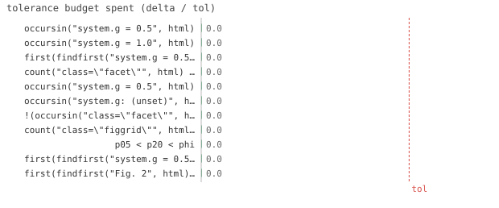

11/11 passed · 1.13s
| id | label | got | want | Δ vs tol (kind) | |
|---|---|---|---|---|---|
| ✓ | t402 | occursin("system.g = 0.5", html) | 1.0 | 1.0 | 0.0 vs 0.5 (abs) |
| ✓ | t403 | occursin("system.g = 1.0", html) | 1.0 | 1.0 | 0.0 vs 0.5 (abs) |
| ✓ | t404 | first(findfirst("system.g = 0.5", html)) < first(findfirst("system.g = 1.0", html)) | 1.0 | 1.0 | 0.0 vs 0.5 (abs) |
| ✓ | t405 | count("class=\"facet\"", html) == 2 | 1.0 | 1.0 | 0.0 vs 0.5 (abs) |
| ✓ | t406 | occursin("system.g = 0.5", html) | 1.0 | 1.0 | 0.0 vs 0.5 (abs) |
| ✓ | t407 | occursin("system.g: (unset)", html) | 1.0 | 1.0 | 0.0 vs 0.5 (abs) |
| ✓ | t408 | !(occursin("class=\"facet\"", html)) | 1.0 | 1.0 | 0.0 vs 0.5 (abs) |
| ✓ | t409 | count("class=\"figgrid\"", html) == 1 | 1.0 | 1.0 | 0.0 vs 0.5 (abs) |
| ✓ | t410 | p05 < p20 < phi | 1.0 | 1.0 | 0.0 vs 0.5 (abs) |
| ✓ | t411 | first(findfirst("system.g = 0.5", html)) < first(findfirst("system.g = 1.0", html)) | 1.0 | 1.0 | 0.0 vs 0.5 (abs) |
| ✓ | t412 | first(findfirst("Fig. 2", html)) < first(findfirst("Fig. 1", html)) | 1.0 | 1.0 | 0.0 vs 0.5 (abs) |

⤓ download{kind=link}